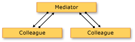

revealed by Eugene Zharkov / @2j2e
Check official UX guidlines
Do not forget about:
You should understand how:
A promise is an object that represent a value that will be available later.
Most API's are wraped to the promises.
All based on two methods .then and .done.
A promise is an object that represent a value that will be available later.
Hilo\Hilo\imageQueryBuilder.js
if (this.settings.bindable) {
// Create `Hilo.Picture` objects instead of returning `StorageFile` objects
queryPromise = queryPromise.then(this._createViewModels);
}var whenImagesForTileRetrieved = queryBuilder.build(picturesLibrary).execute();
whenImagesForTileRetrieved
.then(Hilo.Tiles.createTileFriendlyImages)
.then(this.getLocalImagePaths)
.then(Hilo.Tiles.createTileUpdates)
.then(queueTileUpdates);Define funtion environment with .bind
Hilo\Hilo\Tiles\TileUpdater.js
var queueTileUpdates = this.queueTileUpdates.bind(this);
queueTileUpdates: function (notifications) {
var self = this;
notifications.forEach(function (notification) {
self.tileUpdater.update(notification);
});
},Bind can receive additional parameters.
Hilo\Hilo\Tiles\createTileFriendlyImages.js
function createTileFriendlyImages(files) {
var localFolder = applicationData.current.localFolder;
var copyThumbnailsToFolder = copyFilesToFolder.bind(null, files);
var whenFolderCreated = localFolder.createFolderAsync(thumbnailFolderName, creationCollisionOption.replaceExisting);
return whenFolderCreated
.then(copyThumbnailsToFolder);
}When you have non-sequential, asynchronous operations that must all complete before you can continue a task, you can use the WinJS.Promise.join
var whenFileIsOpen = targetFile.openAsync(fileAccessMode.readWrite);
var whenThumbailIsReady = sourceFile.getThumbnailAsync(thumbnailMode.singleItem);
var whenEverythingIsReady = WinJS.Promise.join({ opened: whenFileIsOpen, ready: whenThumbailIsReady });Use .done at the end of method chain.
It doesn't return another promise and throw unhandled expetions.
Hilo\Hilo\crop\croppedImageWriter.js
var decoderPromise = getOrientation
.then(function (retrievedProps) {
exifOrientation = (retrievedProps.size !== 0)
? retrievedProps["System.Photo.Orientation"]
: photoOrientation.normal;
}, function (error) {
switch (error.number) {
case Hilo.ImageWriter.WINCODEC_ERR_UNSUPPORTEDOPERATION:
case Hilo.ImageWriter.WINCODEC_ERR_PROPERTYNOTSUPPORTED:
exifOrientation = photoOrientation.normal;
break;
default:
throw error;
}
});Hilo\Hilo\hub\hub.html
<div id="hub-image-template" data-win-control="WinJS.Binding.Template">
<div data-win-bind="style.backgroundImage: url.backgroundUrl; alt: name; className: className" class="thumbnail">
</div>
</div>Hilo\Hilo.Specfications\specs\hub\ListViewPresenter.spec.js
describe("when snapped", function () {
var el;
beforeEach(function () {
var appView = {};
el = new Specs.WinControlStub();
el.winControl.addEventListener = function () { };
var listviewPresenter = new Hilo.Hub.ListViewPresenter(el, appView);
listviewPresenter.setViewState(Windows.UI.ViewManagement.ApplicationViewState.snapped);
});
it("the ListView should use a ListLayout", function () {
expect(el.winControl.layout instanceof WinJS.UI.ListLayout).equal(true);
});
});Each presenter is responsible for a specific part of the page (a control)
One page-specific presenter (the mediator) coordinates the other presenters (control-specific) and receives forwarded events
Hilo\Hilo\detail\detail.js
ready: function (element, options) {
var query = options.query;
var queryDate = query.settings.monthAndYear;
var pageTitle = Hilo.dateFormatter.getMonthFrom(queryDate) + " " + Hilo.dateFormatter.getYearFrom(queryDate);
this.bindPageTitle(pageTitle);
var hiloAppBarEl = document.querySelector("#appbar");
var hiloAppBar = new Hilo.Controls.HiloAppBar.HiloAppBarPresenter(hiloAppBarEl, WinJS.Navigation, query);
var filmstripEl = document.querySelector("#filmstrip");
var flipviewEl = document.querySelector("#flipview");
var flipviewPresenter = new Hilo.Detail.FlipviewPresenter(flipviewEl);
var filmstripPresenter = new Hilo.Detail.FilmstripPresenter(filmstripEl);
var detailPresenter = new Hilo.Detail.DetailPresenter(filmstripPresenter, flipviewPresenter, hiloAppBar, WinJS.Navigation);
detailPresenter.addEventListener("pageSelected", function (args) {
var itemIndex = args.detail.itemIndex;
options.itemIndex = itemIndex;
});
detailPresenter
.start(options)
.then(function () {
WinJS.Application.addEventListener("Hilo:ContentsChanged", Hilo.navigator.reload);
});
},Hilo\Hilo\hub\hub.html
<section id="image-nav" data-win-control="WinJS.UI.HtmlControl" data-win-options="{uri: '/Hilo/controls/HiloAppBar/hiloAppBar.html'}"></section>Hilo\Hilo\controls\HiloAppBar\hiloAppBar.html
<div id="appbar" data-win-control="WinJS.UI.AppBar" data-win-options="{sticky: false}">
<button
data-win-control="WinJS.UI.AppBarCommand"
data-win-options="{id:'rotate', icon:'rotate', section: 'selection', disabled: true}"
data-win-bind="{disabled: isCorrupt}"
data-win-res="{winControl: {label:'RotateAppBarButton.Name'}}">
</button>
<button
data-win-control="WinJS.UI.AppBarCommand"
data-win-options="{id:'crop', icon:'crop', section: 'selection', disabled: true}"
data-win-bind="{disabled: isCorrupt}"
data-win-res="{winControl: {label:'CropAppBarButton.Name'}}">
</button>
</div>Hilo\default.js
if (currentState.kind === activation.ActivationKind.launch) {
if (currentState.previousExecutionState !== activation.ApplicationExecutionState.terminated) {
// When the app is started, we want to update its tile
// on the start screen. Since this API is not accessible
// inside of Blend, we only invoke it when we are not in
// design mode.
if (!Windows.ApplicationModel.DesignMode.designModeEnabled) {
var tileUpdater = new Hilo.Tiles.TileUpdater();
tileUpdater.update();
}
}Hilo\Hilo\Tiles\TileUpdater.js
update: function () {
// Bind the function to a context, so that `this` will be resolved
// when it is invoked in the promise.
var queueTileUpdates = this.queueTileUpdates.bind(this);
// Build a query to get the number of images needed for the tiles.
var queryBuilder = new Hilo.ImageQueryBuilder();
queryBuilder.count(numberOfImagesToRetrieve);
var whenImagesForTileRetrieved = queryBuilder.build(picturesLibrary).execute();
whenImagesForTileRetrieved
.then(Hilo.Tiles.createTileFriendlyImages)
.then(this.getLocalImagePaths)
.then(Hilo.Tiles.createTileUpdates)
.then(queueTileUpdates);
}The XML for a typical tile notification
<tile>
<visual>
<binding template="TileWideImageCollection">
<image id="1" src="ms-appdata:///local/thumbnails/thumbImage_0.jpg"/>
<image id="2" src="ms-appdata:///local/thumbnails/thumbImage_1.jpg"/>
<image id="3" src="ms-appdata:///local/thumbnails/thumbImage_2.jpg"/>
<image id="4" src="ms-appdata:///local/thumbnails/thumbImage_3.jpg"/>
<image id="5" src="ms-appdata:///local/thumbnails/thumbImage_4.jpg"/>
</binding>
<binding template="TileSquareImage">
<image id="1" src="ms-appdata:///local/thumbnails/thumbImage_0.jpg"/>
</binding>
</visual>
</tile>Hilo\Default.html
<div id="contenthost" data-win-control="Hilo.PageControlNavigator" data-win-options="{home: '/Hilo/hub/hub.html'}">
</div>Hilo\Hilo\hub\hubPresenter.js
itemClicked: function (args) {
// Get the `Hilo.Picture` item that was bound to the invoked image,
// and the item index from the list view control.
var picture = args.detail.item.data;
// Build the query that can find this picture within it's month group.
var options = this.buildQueryForPicture(picture);
// Navigate to the detail view, specifying the month query to
// show, and the index of the individual item that was invoked.
this.nav.navigate("/Hilo/detail/detail.html", options);
},Hilo\Hilo\hub\hub.js
Hilo.controls.pages.define("hub", {
ready: function (element, options) {
// Handle the app bar button clicks for showing and hiding the app bar.
var appBarEl = document.querySelector("#appbar");
var hiloAppBar = new Hilo.Controls.HiloAppBar.HiloAppBarPresenter(appBarEl, WinJS.Navigation);
// Handle selecting and invoking (clicking) images.
var listViewEl = document.querySelector("#picturesLibrary");
this.listViewPresenter = new Hilo.Hub.ListViewPresenter(listViewEl, Windows.UI.ViewManagement.ApplicationView);
// Coordinate the parts of the hub page.
this.hubViewPresenter = new Hilo.Hub.HubViewPresenter(
WinJS.Navigation,
hiloAppBar,
this.listViewPresenter,
new Hilo.ImageQueryBuilder()
);
this.hubViewPresenter
.start(knownFolders.picturesLibrary)
.then(function () {
WinJS.Application.addEventListener("Hilo:ContentsChanged", Hilo.navigator.reload);
});
},
updateLayout: function (element, viewState, lastViewState) {
this.listViewPresenter.setViewState(viewState, lastViewState);
},
unload: function () {
WinJS.Application.addEventListener("Hilo:ContentsChanged", Hilo.navigator.reload);
Hilo.UrlCache.clearAll();
this.hubViewPresenter.dispose();
this.hubViewPresenter = null;
}
});Hilo\Hilo\PageControlNavigator.js
function PageControlNavigator(element, options) {
// . . .
window.onresize = this._resized.bind(this);
// . . .
},
_resized: function (args) {
if (this.pageControl && this.pageControl.updateLayout) {
this.pageControl.updateLayout.call(this.pageControl, this.pageElement, appView.value, this._lastViewstate);
}
this._lastViewstate = appView.value;
},Hilo\Hilo\hub\hub.js
updateLayout: function (element, viewState, lastViewState) {
this.listViewPresenter.setViewState(viewState, lastViewState);
},Hilo\Hilo\hub\listViewPresenter.js
setViewState: function (viewState) {
this.lv.layout = this.selectLayout(viewState);
},
selectLayout: function (viewState, lastViewState) {
if (lastViewState === viewState) { return; }
if (viewState === appViewState.snapped) {
return new WinJS.UI.ListLayout();
}
else {
var layout = new WinJS.UI.GridLayout();
layout.groupInfo = function () { return listViewLayoutSettings; };
layout.maxRows = 3;
return layout;
}
},Templates for group items and group headers in the normal view.
Hilo\Hilo\month\month.html
<div id="monthItemTemplate" data-win-control="WinJS.Binding.Template">
<div data-win-bind="style.backgroundImage: url.backgroundUrl; className: className"></div>
</div>
<div id="monthGroupHeaderTemplate" data-win-control="WinJS.Binding.Template">
<a class="monthLink" href="#"><span data-win-bind="innerHTML: title"></span> (<span data-win-bind="innerText: count"></span>)</a>
</div>
<div id="monthSnappedTemplate" data-win-control="WinJS.Binding.Template">
<span data-win-bind="innerHTML: title"></span> (<span data-win-bind="innerText: count"></span>)
<div data-win-bind="style.backgroundImage: backgroundUrl;" class="thumbnail"></div>
</div>You should provide both pointer and touch experience to your user.
The pointer is an old school, touch control requires some skills from developer.
Hilo\Hilo\rotate\TouchProvider.js
function TouchProviderConstructor(inputElement) {
var recognizer = new Windows.UI.Input.GestureRecognizer();
recognizer.gestureSettings = Windows.UI.Input.GestureSettings.manipulationRotate;
inputElement.addEventListener("MSPointerDown", function (evt) {
var pp = evt.currentPoint;
if (pp.pointerDevice.pointerDeviceType === pointerDeviceType.touch) {
recognizer.processDownEvent(pp);
}
}, false);
inputElement.addEventListener("MSPointerMove", function (evt) {
var pps = evt.intermediatePoints;
if (pps[0] && pps[0].pointerDevice.pointerDeviceType === pointerDeviceType.touch) {
recognizer.processMoveEvents(pps);
}
}, false);
inputElement.addEventListener("MSPointerUp", function (evt) {
var pp = evt.currentPoint;
if (pp.pointerDevice.pointerDeviceType === pointerDeviceType.touch) {
recognizer.processUpEvent(pp);
}
}, false);
recognizer.addEventListener("manipulationupdated", this._manipulationUpdated);
recognizer.addEventListener("manipulationcompleted", this._manipulationCompleted);
},
Bytecode caching is a technique in which the system creates bytecode for each JavaScript file once, rather than re-creating the bytecode each time it starts the app (30% improvment in large apps).
Avoid synchronous API calls. Break proccessing operations into series of smaller operations.
Use Windows Runtime thumbnail APIs to cache and show thumbnails.
Use DOM objects only to store information that directly affects how the DOM lays out or draws elements.
Certain types of animations are offloaded from the UI thread to GPU-accelerated system thread.
Combine API calls to reduce the number of layout passes.
Store session data in the sessionState in-memory object.
When your app begins the suspension process, it should free any large objects that can be easily rebuilt when it resumes.
Hilo.Specifications\specs\queries\imageQueryBuilder.spec.js
describe("Image Query Builder", function () {
var queryBuilder, storageFolder;
beforeEach(function (done) {
queryBuilder = new Hilo.ImageQueryBuilder();
var whenFolder = Windows.Storage.ApplicationData.current.localFolder.getFolderAsync("Indexed");
whenFolder.then(function (folder) {
storageFolder = folder;
done();
});
});Hilo.Specifications\specs\queries\imageQueryBuilder.spec.js
describe("when executing a query that specifies the number of images to load", function () {
var queryResult;
beforeEach(function () {
queryResult = queryBuilder
.count(1)
.build(storageFolder)
.execute();
});
it("should load the specified number of images", function (done) {
queryResult.then(function (images) {
expect(images.length).equals(1);
done();
}).done(null, done);
});
});Mocha test runner should intercepts this exception and reports it as a test failure.
But WinJS is intercepting all promises errors.
.done function is never called, test will go into a wait state and Mocha will time out (2 seconds), omitting the fail message.
source - http://bit.ly/win8js
app docs - http://bit.ly/pphilojs